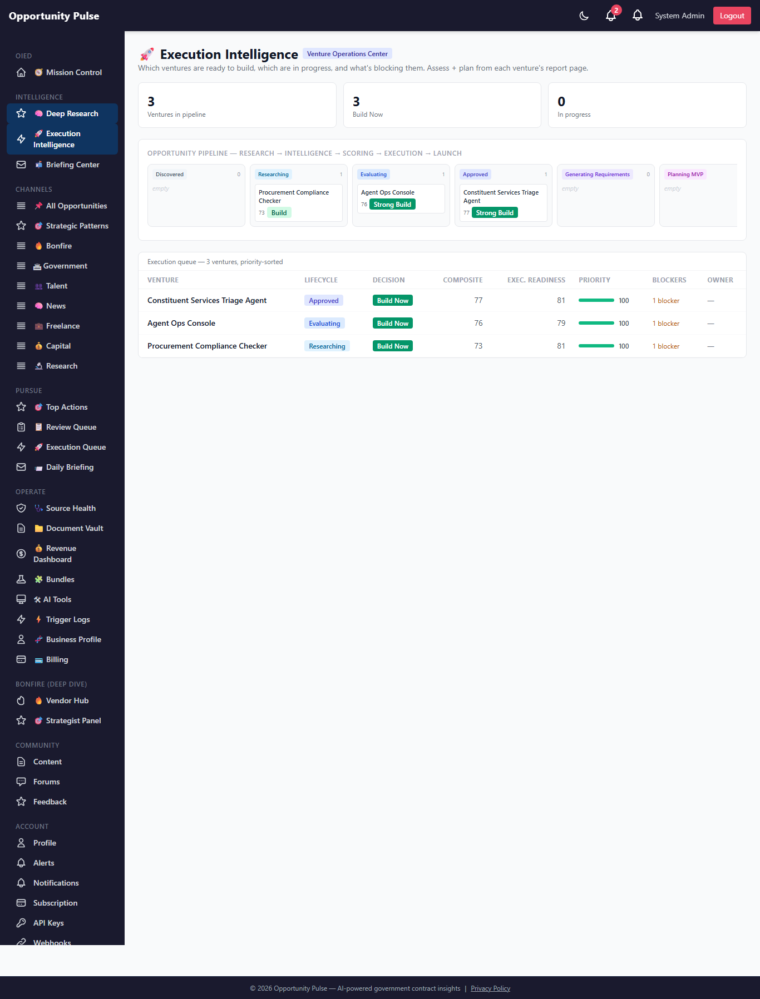
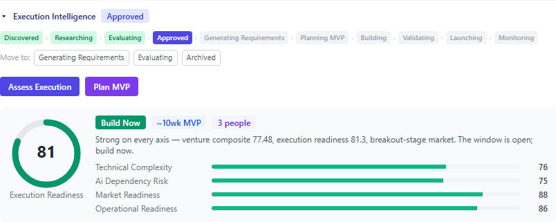

Deep Research Intelligence Engine — Phase 3
Execution Intelligence · 2026-05-14 · commit 7241590 · all 1,691 backend tests passing
Phase 1 built the foundation. Phase 2 made it real strategic intelligence. Phase 3 turns it into execution intelligence — the platform now answers the operational questions: Should we build this? Can we execute it? How fast? What would the MVP look like? What team and resources? What's the fastest commercialization path?
A venture idea now has an explicit 11-state lifecycle, a deterministic execution readiness assessment, an explainable build-vs-monitor decision, an AI-generated MVP plan and launch strategy, a deployment readiness classification, and a place in a priority-sorted execution queue. The AI Project Architect bridge gained a real, production-shaped HTTP client.
Human-in-the-loop is preserved throughout. Nothing auto-executes, auto-builds, auto-deploys, or auto-contacts anyone. This is AI venture execution intelligence — not autonomous startups.
6 tables live 9 services 3 deterministic engines real architect client execution dashboard
The Phase 3 objective
Phase 2 could tell you a venture idea was a strong_build in a breakout
market with commercial_acceleration convergence. What it couldn't tell you:
can Colaberry actually pull it off, how long it would take, what the MVP is, and what the
go-to-market looks like.
Phase 3 operationalizes the intelligence layer. Every venture idea becomes something you can act on: it has a lifecycle you move it through, an execution-readiness score grounded in technical complexity / AI-dependency risk / market + operational readiness, a build-vs-monitor decision with a fully traceable rationale, a concrete MVP plan and launch strategy, and a deployment-readiness level. The execution dashboard is the venture operations center that ties it all together.
Your feedback on the Phase 3 direction
What shipped
| # | Capability | Delivered |
|---|---|---|
| 1 | Venture Lifecycle Management | ventureLifecycle.service — 11-state machine, transition validation, audit trail |
| 2 | Real AI Project Architect Integration | projectArchitectClient.service — production HTTP client; bridge picks real-vs-foundation path |
| 3 | Execution Readiness Engine | executionReadiness.service — deterministic 4-dimension scoring + timeline + staffing |
| 4 | MVP Planning Engine | mvpPlanning.service — AI plan content + deterministic timeline |
| 5 | Build-vs-Monitor Intelligence | ventureDecisionEngine.service — deterministic 7-outcome ordered-rule engine |
| 6 | Execution Queue | /admin/deep-research/execution — the venture operations center |
| 7 | Opportunity Pipeline Workflow | visual pipeline flow — ventures grouped by lifecycle stage |
| 8 | Launch Strategy Engine | launchStrategy.service — ICP / GTM / pricing / pilot / enterprise / gov |
| 9 | Deployment Readiness Intelligence | deploymentReadiness.service — deterministic prototype/mvp/production/enterprise |
| 10 | Execution Visual Intelligence | readiness gauges, lifecycle tracker, decision + deployment badges, sub-score bars |
Feedback on the shipped scope
Venture lifecycle
Every venture idea moves through an explicit 11-state lifecycle. ventureLifecycle.service
owns the state machine: the allowed transition graph, transition validation, the audit trail
(venture_lifecycle_events — one row per change, with from/to/actor/note/timestamp),
and keeping the denormalized current state in sync on the venture idea + its queue row.
Every state can transition to archived (and back to discovered to
revive); a few back-edges allow re-evaluation. Illegal jumps (e.g. discovered → launching)
are rejected with a BAD_INPUT error. deterministic
Feedback on the lifecycle model
The opportunity pipeline
The pipeline is the visual flow of the whole platform — research → strategic intelligence → venture scoring → execution readiness → requirements → MVP planning → build → launch. On the execution dashboard it renders as a column-per-stage flow with every venture in its current stage.
Feedback on the pipeline view
Execution readiness engine
Deterministic. Answers "can Colaberry realistically execute this?" — no AI. Four sub-scores (0-100, higher = more ready / lower risk), computed from the venture idea's own fields, its Phase 2 venture scores, and the report's strategic signal:
- technical_complexity — buildability + technical feasibility (higher = simpler to build).
- ai_dependency_risk — how fragile the AI dependency is (higher = safer).
- market_readiness — market stage + correlation strength.
- operational_readiness — commercialization + gov alignment + a clear target customer.
These compose via a defined weight model (sum 1.0) into the execution_readiness_score.
The engine also derives a concrete MVP timeline estimate (weeks), a
staffing profile (roles + headcount), and an infrastructure profile
— all deterministic functions of the same inputs.
deterministic On the seeded sample, the Constituent Triage Agent scored 81.3 — ~10-week MVP, 3 people.
Feedback on the readiness engine
Build-vs-monitor decision engine
Deterministic + fully explainable. Given the venture's Phase 2 scores, the report's convergence + market timing, the monetization model set, and the Phase 3 execution readiness, it produces one decision from a fixed set via an ordered rule list — first rule that matches wins, and the rationale is always "the rule that fired + the factor values that triggered it". No hidden weighting; the decision is auditable.
| Decision | Fires when |
|---|---|
OVERSATURATED | low competition room in a mature market |
HIGH_RISK | execution readiness < 40 |
TOO_EARLY | emerging market + weak correlation |
NEEDS_VALIDATION | low composite, or weak correlation + weak convergence |
BUILD_NOW | strong composite + readiness + acceleration/breakout market |
BUILD_SOON | solid composite + readiness, off-peak timing |
MONITOR | the catch-all — worth watching, not acting yet |
deterministic Every decision path is covered by a dedicated test.
Feedback on the decision engine
Deployment readiness engine
Deterministic. Classifies how far a venture could realistically be deployed: prototype → mvp → production → enterprise. It reads five signals — requirements completeness, architecture quality, AI-dependency safety, infrastructure readiness, and compliance exposure. The first four are readiness sub-scores that average into a base; compliance exposure gates the top levels rather than averaging in (a gov-aligned venture carries the most regulatory exposure to clear before "enterprise" is honest).
deterministic
MVP planning engine
Hybrid. The plan content — MVP scope, phase-1 features, the ruthless fast-launch subset,
future roadmap, suggested architecture + stack, recommended AI components, staffing — is
AI-generated (it's inherently creative and venture-specific). The timeline estimate is
deterministic, taken from the execution readiness engine, so the schedule is auditable
rather than a model guess. Goes through the resilient aiProvider layer.
Launch strategy engine
AI-generated go-to-market strategy: ICP, GTM motion, landing-page angle, outreach, acquisition channels, pricing, and the pilot / enterprise / government motions — grounded in the venture's monetization models so it's specific, not generic. The prompt is instructed to be honest: if enterprise or government isn't a fit, it says so plainly.
Feedback on the MVP + launch engines
AI Project Architect client
Phase 1 + 2's Agent Foundry handoff was a deterministic scaffold. Phase 3 adds
projectArchitectClient.service — a real, production-shaped HTTP client:
timeouts (AbortController), exponential-backoff retry on transient classes, resumable polling
(the remote job id is the only state needed), artifact fetching, and typed error classification.
isConfigured() returns false and every call throws
NOT_CONFIGURED. projectArchitectBridge catches that and runs the
deterministic foundation walk. The moment AGENT_FOUNDRY_API_URL + API_KEY
are set, the bridge switches to the real path — create remote job, resumable polling, artifact
fetch — with no caller change. The client is decoupled by design: swapping Agent
Foundry for a different architect provider is a localized change in one module.
Feedback on the architect integration
Execution orchestrator
executionQueue.service operationalizes the engines. Two human-triggered actions:
- assessVenture() — runs the deterministic engines (execution readiness + build-vs-monitor decision), persists, refreshes the venture's execution queue row with a recomputed priority score + derived blockers. Cheap, no AI — safe to run often.
- planMvp() — runs the AI engines (MVP plan + launch strategy) + the deterministic deployment readiness. Each step is independent: one AI engine failing degrades gracefully and the deterministic deployment readiness still runs.
Plus the read surfaces: getVentureExecution() assembles every execution-intelligence
piece for one venture, listQueue() is the priority-sorted queue, and
getPipeline() groups ventures by lifecycle stage.
Screen — the execution dashboard
/admin/deep-research/execution — the venture operations center. Summary stats, the
opportunity pipeline flow (ventures grouped by lifecycle stage), and the priority-sorted execution
queue with decisions, scores, priority bars, and blockers.

The execution dashboard — pipeline flow on top, priority-sorted execution queue below.
Feedback
Screen — the venture execution panel
On each venture idea card on the report page, a lazy, collapsible Execution Intelligence panel: the lifecycle tracker + transition controls, the Assess / Plan-MVP actions, the execution readiness gauge + decision + sub-scores, and (once generated) the MVP plan, launch strategy, and deployment readiness. Every action is human-triggered — nothing auto-runs.

The venture execution panel — lifecycle tracker, the BUILD NOW decision, the readiness gauge (81), and the 4 readiness sub-scores.
Feedback
Database schema
Migration 20260514000003-deep-research-phase-3.js — 6 tables + columns, applied live on prod.
venture_lifecycle_events the audit trail (venture_idea_id, from_state, to_state, actor, note)
execution_readiness deterministic readiness (4 sub-scores, mvp_timeline_weeks,
staffing, infrastructure, breakdown — incl. the decision)
mvp_plans MVP scope, phased features, stack, AI components, staffing, timeline
launch_strategies ICP / GTM / pricing / pilot / enterprise / gov strategy
deployment_readiness prototype/mvp/production/enterprise + 5 sub-scores
execution_queue_items one row per venture — lifecycle_state, priority_score, blockers, owner
+ venture_ideas : lifecycle_state, lifecycle_owner
+ project_generation_jobs : external_job_id, provider ('foundation' | 'agent_foundry')
API routes
GET /api/v1/deep-research/ventures/:id/lifecycle lifecycle + allowed transitions + history
POST /api/v1/deep-research/ventures/:id/lifecycle transition { toState, note }
PATCH /api/v1/deep-research/ventures/:id/owner set owner
POST /api/v1/deep-research/ventures/:id/assess run the deterministic engines
POST /api/v1/deep-research/ventures/:id/mvp-plan run the AI engines + deployment readiness
GET /api/v1/deep-research/ventures/:id/execution all execution intelligence for a venture
GET /api/v1/deep-research/execution/queue the priority-sorted execution queue
GET /api/v1/deep-research/execution/pipeline ventures grouped by lifecycle stage
Static ventures + execution prefixes — no collision with the /:id param routes.
Files changed
New — backend
backend/src/migrations/20260514000003-deep-research-phase-3.js
backend/src/models/{VentureLifecycleEvent,ExecutionReadiness,MvpPlan,
LaunchStrategy,DeploymentReadiness,ExecutionQueueItem}.js
backend/src/deepResearch/ventureLifecycle.service.js lifecycle state machine
backend/src/deepResearch/projectArchitectClient.service.js real Agent Foundry HTTP client
backend/src/deepResearch/executionReadiness.service.js deterministic readiness engine
backend/src/deepResearch/ventureDecisionEngine.service.js deterministic build-vs-monitor
backend/src/deepResearch/deploymentReadiness.service.js deterministic deployment readiness
backend/src/deepResearch/mvpPlanning.service.js AI MVP plan + deterministic timeline
backend/src/deepResearch/launchStrategy.service.js AI launch strategy
backend/src/deepResearch/executionQueue.service.js execution orchestrator + queue
backend/scripts/capture-deep-research-phase-3-walkthrough.js
backend/tests/deepResearch/{ventureLifecycle,projectArchitectClient,executionReadiness,
ventureDecisionEngine,deploymentReadiness,mvpPlanning,launchStrategy,executionQueue}.test.js
New — frontend
frontend/src/pages/ExecutionDashboardPage.jsx the venture operations center frontend/src/components/deepResearch/ExecutionVisuals.jsx gauges / tracker / badges frontend/src/components/deepResearch/VentureExecutionPanel.jsx per-venture execution panel
Modified
backend/src/deepResearch/projectArchitectBridge.service.js real-vs-foundation path
backend/src/deepResearch/deepResearch.controller.js + .routes.js Phase 3 endpoints
backend/src/models/{index,VentureIdea,ProjectGenerationJob}.js
backend/scripts/seed-deep-research-sample.js lifecycle + execution seed
frontend/src/services/deepResearchService.js · pages/DeepResearchReportPage.jsx
frontend/src/App.jsx · components/common/Sidebar.jsx
~50 new tests; full suite 147 suites / 1,691 tests passing.
Validations performed
| # | Check | Result |
|---|---|---|
| 1 | Migration runs clean on prod | ✅ migrated (0.468s) |
| 2 | All 6 tables + columns created | ✅ verified in pg_tables |
| 3 | Lifecycle transitions work | ✅ seeded ventures moved discovered→researching→evaluating→approved; illegal jumps rejected (tests) |
| 4 | AI Project Architect integration works | ✅ client throws NOT_CONFIGURED unconfigured; mocked-fetch tests cover createJob/pollJob/retry/fail-fast |
| 5 | Requirement jobs sync progress | ✅ bridge real-path polls + syncs (tests); foundation path validated in Phase 1 |
| 6 | Execution readiness scores generate | ✅ seeded sample → 78–81 across 3 ventures, persisted with sub-scores + staffing |
| 7 | MVP plans generate | ✅ engine + sanitization tested; on-demand from UI (AI — see limitations) |
| 8 | Build-vs-monitor decisions stable | ✅ all 7 decision paths tested; deterministic; seeded ventures → BUILD_NOW |
| 9 | Execution dashboard functions | ✅ pipeline flow + priority queue render; screenshot p3-01 |
| 10 | Launch strategy generation works | ✅ engine + sanitization tested; on-demand from UI (AI) |
| 11 | Deployment readiness works | ✅ deterministic; prototype/mvp/production/enterprise classification tested |
| 12 | Existing reports / scoring / scheduler unaffected | ✅ full suite 147 suites / 1,691 tests green |
| 13 | Existing requirements flows preserved | ✅ foundation path unchanged; projectArchitectBridge tests pass |
Feedback on validation coverage
Known limitations
-
The AI engines (MVP planning + launch strategy) are not validated against live AI —
OpenAI quota exhausted. They go through the resilient
aiProviderlayer and are covered by unit tests including the failure paths. The deterministic engines (execution readiness, build-vs-monitor decision, deployment readiness) were validated by running the real engine code on prod via the seeder.planMvpdegrades gracefully — if both AI engines 429, deployment readiness still runs and the result reports the errors. -
The Agent Foundry endpoint isn't live. The client is real and fully tested
(mocked fetch); it's just not pointed at anything yet. Set
AGENT_FOUNDRY_API_URL+AGENT_FOUNDRY_API_KEYand the bridge switches to the real path with no code change. - The execution queue is unpaginated. Fine at current venture volume; a pager is a small future addition.
- Confidence decay over time is not yet implemented. Phase 7's spec mentioned "confidence decay" on the pipeline — Phase 3 ships the pipeline + lifecycle; decay is a natural Phase 4 addition (re-assess stale ventures, fade their priority).
- Lifecycle transitions are manual. By design — human-in-the-loop. A future phase could suggest transitions (e.g. "this venture is BUILD_NOW + assessed — ready to approve?") but never auto-transition.
Recommended Phase 4
- Wire a healthy AI provider (Anthropic fallback). Still the highest-leverage step — it unblocks live validation of the Phase 2 + 3 AI engines. The
aiProviderseam is built and waiting. - Live Agent Foundry integration. Once Agent Foundry exposes its API, set the env vars — the real client + bridge path are already built and tested.
- Confidence decay + auto-re-assessment. Stale ventures should fade in priority; a scheduled re-assessment keeps the queue honest as signals shift.
- Suggested lifecycle transitions. The decision engine already knows a venture is BUILD_NOW — surface a "ready to approve?" nudge (human still clicks).
- Execution analytics. Cycle-time per lifecycle stage, decision-accuracy tracking once real ventures complete, queue throughput.
- Resource + capacity modelling. The execution readiness engine derives staffing per venture; aggregate it into "can we actually staff everything in the BUILD_NOW queue?"
Feedback on the Phase 4 roadmap
Final notes
Phase 3 is shipped and deployed. The venture lifecycle, the three deterministic engines (execution readiness, build-vs-monitor decision, deployment readiness), the two AI engines (MVP planning, launch strategy), the real Agent Foundry HTTP client, the execution orchestrator, and the execution dashboard are all live on prod. The full backend suite — 1,691 tests — is green.
The deterministic engines were validated by running the real engine code against the seeded sample on prod: three venture ideas moved through their lifecycles, were assessed, and landed in the execution queue with BUILD_NOW decisions, execution readiness scores of 78–81, and correctly-derived blockers. Human-in-the-loop is preserved end to end — nothing in Phase 3 auto-executes.
Anything not captured anywhere above: